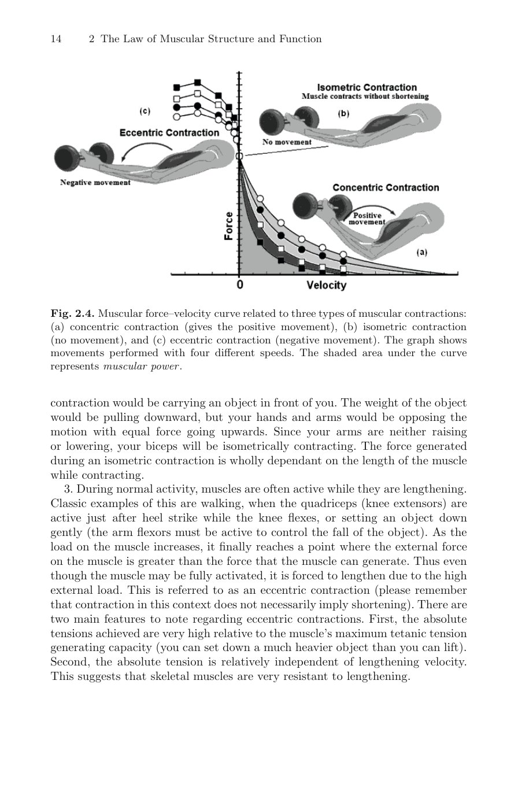
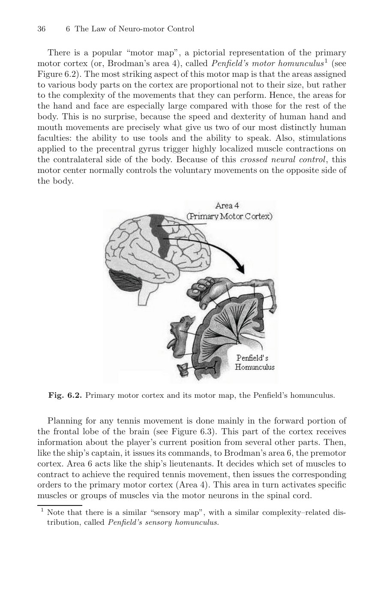
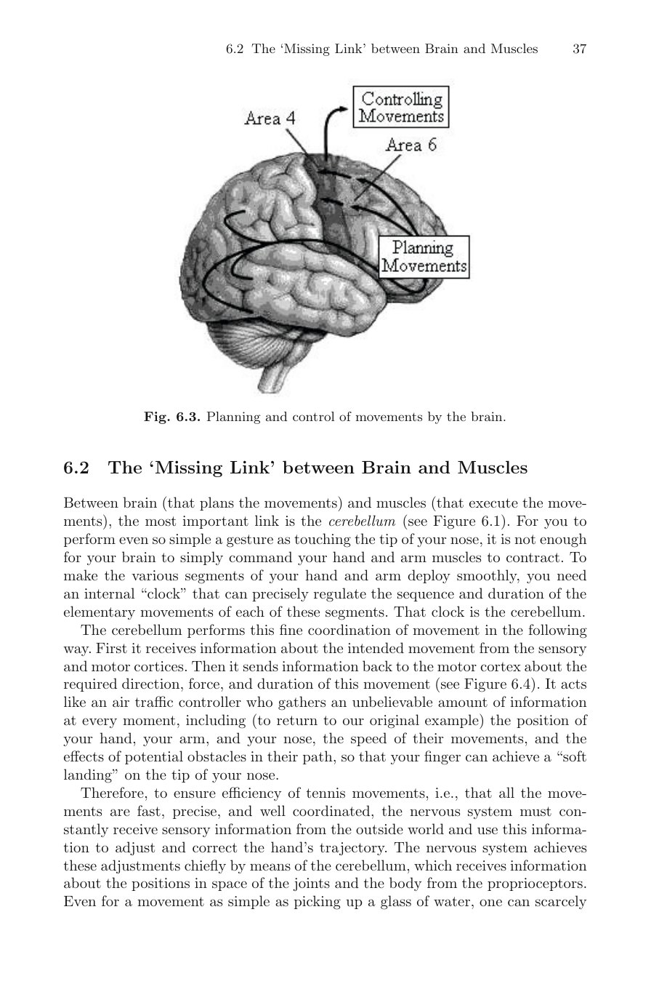
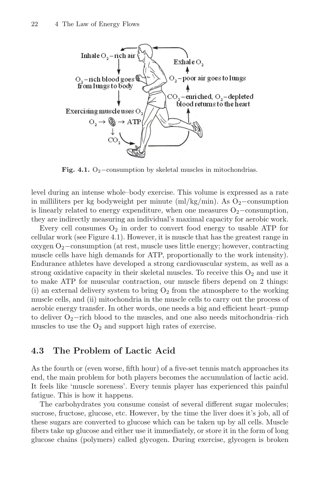
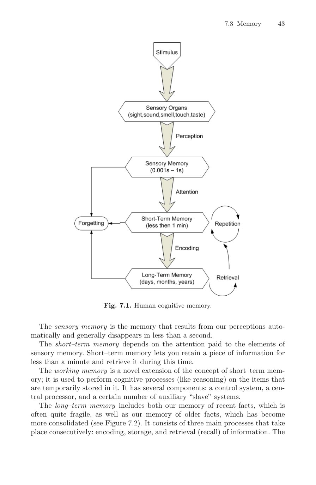

Phần I: Hiện Tượng Roger Federer & Cơ Sinh Học Cơ Bắp Cốt Lõi
Khám phá vũ khí bí mật của Federer tại Wimbledon, giải mã chuỗi động học roi da và vạch trần huyền thoại phi khoa học về trí nhớ cơ bắp
1. Chương 1: Hiện Tượng Roger Federer & Vũ Khí Bí Mật
Trận chung kết lịch sử Wimbledon 2009 kéo dài năm set giữa Roger Federer và Andy Roddick là một trong những cột mốc vĩ đại nhất của nền khoa học quần vợt hiện đại.
Federer kết thúc trận đấu với một trăm lẻ bảy điểm chiến thắng (winners) và chỉ phạm ba mươi tám lỗi tự đánh hỏng (unforced errors), đạt tỷ lệ hiệu quả W/E phi thường lên tới hai phẩy tám. Trong khi đó, Andy Roddick sở hữu cú giao bóng sấm sét bậc nhất lịch sử với bảy mươi tư điểm winner nhưng bị áp đảo bởi sự chuẩn xác tuyệt đối của Federer.
Phân tích cơ sinh học và thần kinh sinh lý học chỉ ra rằng: vũ khí bí mật của cú giao bóng Federer không nằm ở sức mạnh cơ bắp thô thiển, mà nằm ở tính liên tục của chuỗi truyền động dạng roi da (Whip-like Proximal-to-Distal Chain).
Động lượng được khởi phát từ mặt đất qua khớp cổ chân, khớp gối, khớp hông, truyền lên cột sống, xoay khớp vai và cuối cùng phóng thích qua cẳng tay và mặt vợt với vận tốc góc cực đại.
Bên cạnh đó, phản xạ căng cơ giãn nở (Stretch-Reflex) của lồng ngực và khớp vai được tích lũy hoàn hảo tại điểm rơi đầu vợt sau lưng, giúp Federer tạo ra tốc độ đầu vợt khủng khiếp mà cơ thể vẫn duy trì trạng thái thả lỏng thanh thoát như một vũ công ballet.

Hình 1: Phân tích cơ sinh học chuỗi động học dạng roi da (Whip-like Movement) và phản xạ căng cơ co rút (Stretch-Reflex) — chìa khóa tạo nên cú giao bóng sấm sét và sự thanh thoát của các huyền thoại.
2. Chương 2: Cấu Trúc Cơ Bắp & Vạch Trần Huyền Thoại "Trí Nhớ Cơ Bắp"
Dưới góc nhìn thần kinh học thực nghiệm chính xác, thuật ngữ "trí nhớ cơ bắp" (Muscle Memory) vốn rất phổ biến trong giới huấn luyện viên phong trào thực chất là một sự ngộ nhận hoàn toàn phi khoa học.
Cơ bắp không hề có bất kỳ tế bào thần kinh nào có khả năng lưu trữ ký ức vận động. Nếu các đường dẫn truyền thần kinh vận động từ tủy sống bị tổn thương, toàn bộ "trí nhớ cơ bắp" sẽ biến mất ngay lập tức.
Tất cả các kỹ năng vận động phức tạp, thói quen kỹ thuật và cảm giác bóng tinh tế đều được mã hóa và lưu trữ duy nhất trong mạng lưới nơ-ron của hệ thần kinh trung ương và vỏ não vận động (Motor Cortex). Cơ bắp đơn thuần là những bộ phận thực thi cơ học chấp hành mệnh lệnh xung điện từ não bộ.
Cấu trúc cơ xương của con người bao gồm ba lớp mô liên kết collagen: Epimysium bao bọc toàn bộ khối cơ, Perimysium phân chia các bó sợi cơ (Fasciculi), và Endomysium bao bọc từng sợi cơ đơn lẻ.
Sự phân hóa giữa các sợi cơ co rút chậm (Type I - Slow Twitch) bền bỉ hiếu khí và các sợi cơ co rút nhanh (Type IIa, IIb - Fast Twitch) bộc phát kỵ khí định hình tốc độ phản xạ và sức mạnh bùng nổ của từng tay vợt trên sân đấu.

Hình 2: Cấu trúc vi mô của hệ cơ xương — Epimysium, Perimysium và Endomysium cùng mạng lưới mao mạch và đầu dây thần kinh chi phối chuyển động cơ học.

Hình 3: Đường cong Lực - Vận tốc (Force–Velocity Curve - Hình 2.4) — Phân tích mối quan hệ giữa sức căng cơ bắp và tốc độ co cơ: co cơ đồng tâm (concentric), co cơ đẳng trường (isometric) và co cơ lệch tâm (eccentric) trong cơ sinh học quần vợt đỉnh cao.
Phần II: Bậc Tự Do Khớp Xương & Động Lực Học Newton-Euler Của Quả Bóng
Mô hình hóa hệ thống cơ thể đa vật thể, kiểm soát cân bằng động học và giải mã phương trình chuyển động của quả bóng trong không gian 3 chiều
3. Chương 5: Đơn Vị Cơ Sinh Học & Bậc Tự Do Của Các Khớp Xương (Degrees-of-Freedom)
Để hiểu được sự phức tạp của chuyển động quần vợt, chúng ta phải mô hình hóa cơ thể con người như một hệ thống liên kết đa vật thể khớp nối linh hoạt (Multi-Body Linked System).
Mỗi khớp xương sở hữu các bậc tự do quay (Rotational Degrees-of-Freedom - DOF) riêng biệt:
Khớp vai là một khớp cầu phức hợp sở hữu ba bậc tự do hoàn chỉnh: gập-duỗi (flexion-extension), dạng-khép (abduction-adduction) và xoay trong-xoay ngoài (internal-external rotation).
Khớp khuỷu tay sở hữu hai bậc tự do: gập duỗi khớp bản lề và xoay sấp ngửa cẳng tay quanh xương quay và xương trụ.
Khớp cổ tay đóng góp thêm hai bậc tự do: gập lòng bàn tay-gập mu bàn tay và nghiêng trụ-nghiêng quay.
Tổng cộng, chỉ riêng cánh tay cầm vợt đã sở hữu tới bảy bậc tự do cơ học! Điều này giải thích tại sao cùng một cú đánh, người chơi có thể tạo ra vô số biến thể quỹ đạo khác nhau.
Nhiệm vụ của quá trình rèn luyện kỹ thuật đỉnh cao là "đóng băng" các bậc tự do dư thừa tại thời Điểm tiếp xúc bóng để tạo sự ổn định cơ học vững chắc.
Bên cạnh đó, sự cân bằng động học (Dynamical Balance) đòi hỏi trọng tâm cơ thể (Center of Mass) phải luôn được định vị chuẩn xác bên trên đa giác hỗ trợ của bàn chân, phân biệt rõ ràng giữa mô-men lực quay (Torque) và động lượng tịnh tiến (Linear Momentum).

Hình 4: Các bậc tự do (Degrees-of-Freedom) trong các khớp xương chính — nền tảng toán cơ học giúp tối ưu hóa chuỗi truyền lực từ chân lên tay cầm vợt.
4. Động Lực Học Newton-Euler Của Quả Bóng Tennis
Quả bóng tennis sau khi rời mặt dây vợt hoạt động như một vật thể rắn tự do trong không gian ba chiều, tuân thủ nghiêm ngặt hệ phương trình vi phân Newton-Euler.
Ba lực vật lý chủ đạo chi phối đường bay của quả bóng:
Thứ nhất, trọng lực Trái Đất kéo quả bóng rơi xuống theo gia tốc trọng trường.
Thứ hai, lực cản khí động học (Aerodynamic Drag Force) làm suy giảm vận tốc bay tịnh tiến của quả bóng theo bình phương tốc độ. Lớp lông nỉ xù trên bề mặt quả bóng tạo ra lớp biên hỗn loạn (Turbulent Boundary Layer) giúp ổn định quỹ đạo bay.
Thứ ba, lực nâng Magnus (Magnus Force): khi quả bóng xoáy tròn quanh trục trong dòng không khí, sự chênh lệch áp suất tĩnh giữa hai bề mặt trên và dưới sẽ tạo ra một lực vuông góc với hướng bay.
Trong cú đánh xoáy cuộn (Topspin): quả bóng xoáy về phía trước khiến vận tốc không khí ở mặt trên chậm hơn mặt dưới, tạo ra vùng áp suất cao phía trên đè quả bóng cắm phập xuống sân với góc nảy dốc đứng và phóng vọt lên cao.
Ngược lại, trong cú đánh cắt xoáy ngược (Backhand Slice): lực Magnus hướng lên trên nâng quả bóng lướt là là mặt lưới và trượt thấp sát mặt sân.
Phần III: Kiểm Soát Thần Kinh Vận Động & Vũ Khí Tối Thượng
Giải mã cung phản xạ tủy sống, liên kết nơ-ron não bộ và phân tích cơ chế tạo tốc độ 155 MPH trong cú giao bóng của Andy Roddick
5. Chương 6: Quy Luật Điều Khiển Thần Kinh Vận Động (Neuro-motor Control)
Mọi cú đánh hoàn hảo bắt đầu từ một chuỗi xung điện siêu việt khởi phát tại vỏ não vận động (Motor Cortex), chạy dọc qua tủy sống và phân phối tới hàng ngàn đơn vị vận động cơ bắp (Motor Units).
Tuy nhiên, thời gian để một tín hiệu thần kinh đi từ mắt lên não bộ, xử lý ý thức và truyền xuống cánh tay mất khoảng hai trăm mili-giây. Trong các pha giao bóng và trả bóng tốc độ cao, khoảng thời gian này là quá chậm.
Các tay vợt đẳng cấp thế giới vận hành dựa trên "Cung Phản Xạ Tủy Sống" (The Spinal Reflex Arc) và các mạch thần kinh tiền định (Feedforward Neural Circuits).
Hệ thống cảm thụ bản thể bao gồm các thoi cơ (Muscle Spindles) đo độ giãn cơ và cơ quan thụ cảm gân Golgi (Golgi Tendon Organs) đo lực căng gân. Khi cơ bắp bị kéo căng đột ngột trong giai đoạn lấy đà mở vợt, thoi cơ sẽ kích hoạt một xung phản xạ tủy sống khiến cơ bắp co rút mạnh mẽ gấp đôi mà không cần chờ lệnh từ não bộ.
Đây chính là "mắt xích bị lãng quên" (The Missing Link) giải thích tại sao những tay vợt hàng đầu có thể phản xạ và đánh trả những quả bóng sấm sét như một bản năng tự động hoàn toàn.

Hình 6: Bản đồ vỏ não vận động Penfield (Penfield's Motor Homunculus - Hình 6.2) — Phân bố các vùng chức năng của não bộ chỉ huy bàn tay, cánh tay và thị giác; giải thích vì sao cảm giác bàn tay chiếm diện tích vỏ não khổng lồ so với các bộ phận khác.

Hình 7: Quy trình lập kế hoạch và điều khiển chuyển động của não bộ (Hình 6.3) — Cơ chế tích hợp tín hiệu thị giác từ thùy đỉnh, lập trình tại vỏ não trước trán và hiệu chỉnh quỹ đạo cú đánh qua vòng điều hòa tiểu não (cerebellum loop).
6. Chương 13: Hiện Tượng Giao Bóng Andy Roddick & Nghệ Thuật Trả Giao Bóng
Hiện tượng cú giao bóng đạt kỷ lục một trăm năm mươi lăm dặm một giờ của Andy Roddick là minh chứng đỉnh cao cho sự kết hợp giữa sức mạnh cơ sinh học và tốc độ thần kinh.
Cú giao bóng của Roddick có hai yếu tố vật lý đặc thù làm nên sự khác biệt:
Thứ nhất, chuyển động uốn cong gập người dạng đòn bẩy ngắn: Roddick sử dụng biên độ mở vợt sau lưng rất gọn gàng, nhưng bù lại, góc nghiêng của thân trên và độ xoắn của khung chậu đạt tới mức cực hạn. Cột sống và các nhóm cơ liên sườn tích lũy năng lượng thế năng đàn hồi khổng lồ như một chiếc lò xo nén chặt.
Thứ hai, gia tốc góc bùng nổ của khớp vai và cẳng tay: tại khoảnh khắc phóng người lên đón bóng, cẳng tay của anh xoay sấp (Pronation) với tốc độ góc vượt ngưỡng hai ngàn độ mỗi giây.
Để rèn luyện vũ khí này, các bài tập plyometric ném bóng tạ qua đầu (Medicine Ball Slams) và bài tập kháng lực dây đàn hồi tốc độ cao là những phương pháp hiệu quả nhất để xây dựng chuỗi động học bộc phát.
Đối với cú trả giao bóng (The Return of Serve): người chơi phải đối mặt với phản xạ phức hợp (Complex Reaction Time). Chìa khóa then chốt là rút ngắn tối đa biên độ chuyển động: khóa cứng cổ tay, xoay vai đón bóng và sử dụng toàn bộ lực bóng của đối phương để phản công ngược lại vào góc sân sâu.
Phần IV: Chiến Thuật Cờ Chớp, Sinh Lý Năng Lượng & Tâm Lý Học Tương Lai
Quy luật ra quyết định dưới một trăm năm mươi mili-giây, cơ chế chuyển hóa năng lượng tế bào và tâm lý học thần kinh nhận thức đỉnh cao
7. Chương 14: Quy Luật Cờ Chớp (The Law of Blitz-Chess)
Quần vợt đỉnh cao thế hệ mới thực chất là một ván cờ chớp (Blitz-Chess) vận động ở cường độ thể lực cùng cực.
Trong một ván cờ chớp thông thường, kỳ thủ có vài giây để tính toán nước đi. Nhưng trên sân tennis, một tay vợt chỉ có khoảng một trăm đến một trăm năm mươi mili-giây để đưa ra quyết định: lựa chọn quả đánh, điều chỉnh độ xoáy, góc đánh và vị trí rơi của quả bóng.
Bộ não của các nhà vô địch không tính toán từng đường bay một cách chậm chạp; họ sử dụng cơ chế "Nhận Diện Khuôn Mẫu Hình Khối" (Pattern Recognition).
Bằng cách quan sát góc xoay của vai đối thủ, vị trí tiếp xúc bóng và hướng nảy đầu vợt, tiềm thức của tay vợt đẳng cấp cao đã giải mã được quỹ đạo bóng trước khi bóng bay qua lưới nửa chặng đường.
Điều này cho phép họ di chuyển đón đầu trước hàng mét và luôn có mặt tại điểm rơi lý tưởng với phong thái ung dung đĩnh đạc.
8. Chương 20: Sinh Lý Học Năng Lượng Quần Vợt & Phục Hồi Tế Bào
Hiệu suất thi đấu quần vợt dựa trên sự tương tác phức hợp của ba hệ thống năng lượng sinh hóa bên trong tế bào sợi cơ:
Hệ thống Phosphagen (ATP-CP): cung cấp năng lượng bùng nổ tức thời cho các cú giao bóng sấm sét và những pha bứt tốc từ một đến ba giây. Nguồn dự trữ creatine phosphate cạn kiệt rất nhanh nhưng có thể tái tạo tới bảy mươi phần trăm trong vòng hai mươi giây nghỉ giữa các điểm số.
Hệ thống Đường phân kỵ khí (Glycolytic System): duy trì công suất vận động cho các loạt giằng co kéo dài từ mười đến ba mươi giây. Quá trình này sản sinh axit lactic và ion hydro làm giảm độ pH trong cơ bắp, gây ra cảm giác mỏi cơ bỏng rát.
Hệ thống Oxy hóa hiếu khí (Oxidative System): đóng vai trò nền tảng bền bỉ duy trì chuyển hóa năng lượng trong các trận đấu marathon kéo dài bốn đến năm tiếng đồng hồ, đồng thời dọn dẹp các sản phẩm phụ chuyển hóa trong các quãng nghỉ giữa game.
Một chế độ dinh dưỡng giàu carbohydrate phức hợp, bù đắp điện giải kịp thời và rèn luyện thể lực ngắt quãng kỵ khí cường độ cao (HIIT) là chìa khóa để duy trì nguồn năng lượng dồi dào từ đầu trận đến điểm số cuối cùng.

Hình 9: Chu trình tiêu thụ oxy và tái tạo ATP trong ti thể tế bào cơ (Hình 4.1) — Cơ chế cung cấp năng lượng hiếu khí và phục hồi phân tử phosphocreatine giữa các loạt rally căng thẳng.
9. Tâm Lý Học Thần Kinh Nhận Thức & Bản Lĩnh Quần Vợt Tương Lai
Ranh giới giữa chiến thắng vinh quang và thất bại cay đắng trong quần vợt tương lai được quyết định tại giao diện tâm lý học thần kinh nhận thức (Cognitive Neuro-Psychology).
Khi đứng trước những điểm số sinh tử (Match Point hay Break Point), hạch hạnh nhân (Amygdala) trong não bộ có xu hướng kích hoạt phản ứng sợ hãi và căng cứng cơ bắp ngoài ý muốn.
Để kiểm soát trạng thái kích thích thần kinh (Arousal Level), các nhà vô địch áp dụng phương pháp phản hồi sinh học (Biofeedback) và kỹ thuật thở điều hòa nhịp tim: hít sâu bốn giây, giữ bốn giây và thở chậm sáu giây để kích thích dây thần kinh phế vị (Vagus Nerve), lập tức hạ nhịp tim xuống vùng tối ưu từ một trăm mười đến một trăm ba mươi nhịp mỗi phút.
Trạng thái Tập trung Tuyệt đối (Hyper-Focus / Flow State) cho phép người chơi nhìn nhận sân đấu như mở rộng ra, thời gian như trôi chậm lại và từng cử động của đối thủ trở nên rõ ràng và dễ đoán định.
Đó chính là bước chuyển mình vĩ đại (Paradigm Shift) đưa một người chơi bình thường trở thành một chiến binh bất khả chiến bại trên sân đấu đỉnh cao!

Hình 10: Mô hình trí nhớ nhận thức và củng cố kỹ năng vận động dài hạn (Hình 7.1) — Quá trình chuyển hóa kỹ thuật từ bộ nhớ làm việc (working memory) sang bộ nhớ dài hạn tiềm thức (implicit procedural memory).